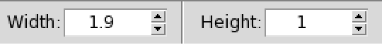
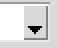

CDT GUI
CDT Main Window
When CDT starts, you are presented with the GUI as shown in the figure.
After you choose a function from the menu to execute, the GUI is transformed as follows (the numbers 1 through 7 in red-cyan circles are presented below)
Your window decorations (title bar, etc.) may appear different depending on your operating system and window manager.
CDT GUI is divided into seven areas:
- Menu Bar
- Toolbars
- Loaded Files
- Input and Command Panels
- Map and Table View
- Output Message
- Status Bar
These seven components of CDT interface are described in more detail in the following sections.
Toolbars
The toolbar provides access to few functions in the File menu, plus additional tools for interacting with the displayed image. Each toolbar item has pop-up help available. Hold your mouse over the item and a short description of the tool’s purpose will be displayed.
- allows to load data.frame into CDT, it’s the same as the menu .
- allows to save current displayed image as JPEG, same as the menu .
- allows to open a
data.frameand directly display it on a table without loading into CDT.  allows to save a table, same as .
allows to save a table, same as . allows to execute task from different functions listed in the menus.
allows to execute task from different functions listed in the menus.-  a spinbox allows to specify the actual dimensions (height and width) of the visible image.
- redraws displayed image after changing the height or width from the spinbox. After any change on the dimensions of the image through the spinbox, this button will be activated and becomes , you have to redraw the plot to get the new dimensions.
- Close open tabs.
- Quit CDT.
Open Files
Each file loaded into CDT is listed in this listbox, it will avoid loading the file twice.
You can delete the data by selecting the corresponding filename and then right click on it, on the drop down menu click on . You can display the data.frame on a table by selecting as well.
Input and Command Panels
Each time you start a CDT function through the menu, an dialog box will come up prompting you to enter the inputs and outputs files and directories related to this function, as well as the required parameters so that the function runs correctly. Then CDT provides a command panel displayed in this area to work with the results, such as, display table or plot/map, select a stations, change options and execute other tasks.
Sometimes, CDT goes directly to this panel without going through a dialog box, in such case, the panel gives you a way to enter the input, set all parameters and run the command.
Map and Table View
Tables, print of R objects, plot and maps are displayed in this area.
The tables can be a simple display of a data.frame or a table you can edit for further purposes, if it is an output from a function such as quality control and homogeneity tests.
The plot and map displayed in this window will depend on the type of outputs or functions you have chosen to run.
The map view can be panned, shifting the focus of the map display to another region, and it can be zoomed in and out.
Output Message
Status Bar
GUI Conventions
This section describes the uniform styles that will be used throughout this manual.
- Menu selection:
Toolbar icons:
Button:
- Tabs: Options
- Checkbox: Use elevation
- Radio button: Use elevation
- Dropdown list: This  is listbox
- Spinbox, select a number:
Browse for a file or directory:

- Zoom in non-active:
Zoom in active:
- Redraw map non-active:
Redraw map active:
Generated on : January 30, 2017, 03:29